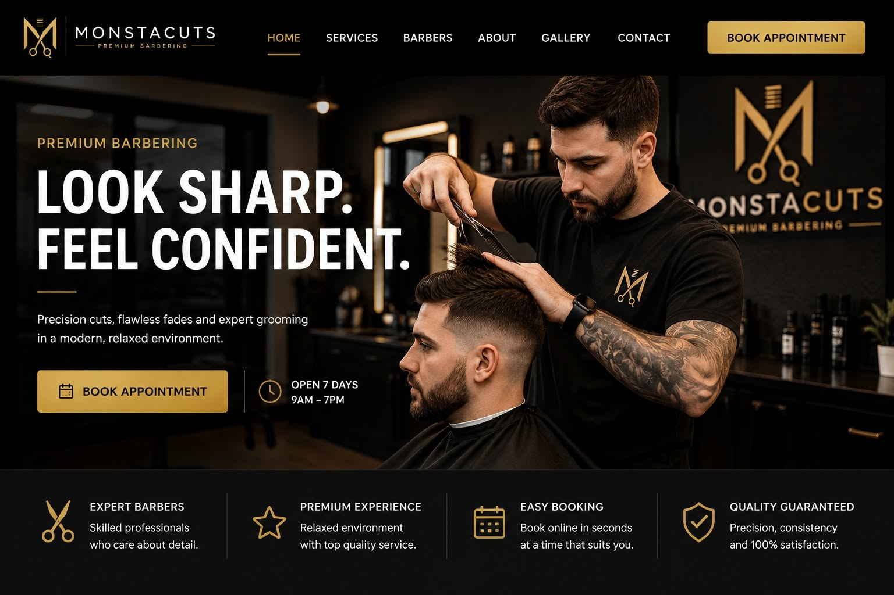

Professional websites that let customers book you online.
CloudMonsta combines a modern Azure-hosted website with Microsoft Bookings and Outlook, giving appointment-based businesses a simple way to take bookings online while reducing diary administration.
Customers want to book quickly without waiting for a reply.
Calls, texts and social media messages can interrupt the working day, while separate booking platforms can add another system for staff to manage.
Turn your website into part of the booking process.
Customers choose a service and available time online, receive confirmation automatically, and the appointment flows into the business Microsoft 365 calendar.
What your customers get
A straightforward booking journey designed to work well from a phone, tablet or computer.
24/7 online booking
Customers can book outside your opening hours without needing to call or message.
Automatic reminders
Microsoft Bookings can send confirmation and reminder emails before the appointment.
Real availability
Bookings can work with staff hours and Outlook calendars to show suitable appointment times.
Choose staff
Customers can choose a particular member of staff where the business wants to offer that option.
Mobile-friendly
The website and booking journey are designed around how customers browse and book today.
Microsoft-powered
The solution connects Azure hosting, Microsoft Bookings, Outlook and Microsoft 365.
What's included
A complete appointment website can cover both the public-facing site and the Microsoft 365 booking workflow behind it.
Professional website
A modern business website built around your brand, services and customers.
- ✓Responsive desktop and mobile design
- ✓Microsoft Azure Static Web Apps hosting
- ✓Custom domain and HTTPS
- ✓Contact and business information
Microsoft Bookings
Configure the booking experience around the way your business works.
- ✓Branded Microsoft Bookings page
- ✓Services, durations and pricing
- ✓Staff and availability
- ✓Booking rules and lead times
Customer notifications
Give customers clear information before and after they book.
- ✓Booking confirmation emails
- ✓Appointment reminders
- ✓Cancellation and rescheduling options
- ✓Calendar invitations where appropriate
Launch and management
Get the solution online properly and keep the option of ongoing support.
- ✓GitHub version control
- ✓Automated Azure deployment
- ✓Basic technical SEO
- ✓Ongoing management available
A real appointment website built by CloudMonsta.
MonstaCuts is a fictional barbershop created to demonstrate the quality, functionality and booking experience available with a CloudMonsta Appointment Website.
More than a visual mock-up.
The demo is a working Azure-hosted website connected to Microsoft Bookings. Visitors can browse the site, open the live booking experience and see how a customer moves from website visit to confirmed appointment.

How it works
A joined-up customer journey from website visit to confirmed appointment.
The customer views services, prices, team information and opening hours.
They enter the Microsoft Bookings journey from the website.
Bookings presents suitable availability based on the configured schedule.
The customer receives confirmation while the booking is added to the business calendar.
Try MonstaCuts for yourself.
MonstaCuts is a fictional barber business built by CloudMonsta to demonstrate the complete journey: Azure-hosted website, live Microsoft Bookings page, customer confirmations and Outlook integration.
Ideal for appointment-based businesses
The same approach can be adapted to many businesses where customers need to choose a service, staff member, date or time.
Cuts, fades, styling, beauty and grooming appointments.
Consultations, reviews and one-to-one training sessions.
Make it easier for customers to choose services and available times.
Consultations, studio sessions and project appointments.
Surveys, quotations, consultations and scheduled site visits.
Customer consultations and appointment-led services.
More than just web design.
CloudMonsta can manage the website, Azure hosting and the Microsoft 365 services behind the booking workflow, providing one joined-up solution instead of several disconnected suppliers.
You deal directly with the person designing and delivering the solution.
The booking workflow is configured with the wider Microsoft environment in mind.
Sites use Azure and GitHub rather than traditional manual FTP deployment.
Microsoft 365, Teams, SharePoint, security and automation can be added later.
Frequently asked questions
What Microsoft 365 licence do I need?
The right licence depends on the business setup. Microsoft Bookings is available with several Microsoft 365 business plans, and CloudMonsta can help recommend the appropriate option.
Can customers receive reminder emails?
Yes. Microsoft Bookings can send automatic confirmation and reminder emails before appointments.
Can several members of staff use it?
Yes. Multiple staff members can be configured with their own services, working hours and availability.
Will appointments appear in Outlook?
Yes. Bookings integrates with Microsoft 365 calendars so appointments can appear directly in the relevant staff calendar.
Can customers book from their phone?
Yes. The website and Microsoft Bookings experience are designed to work on modern phones, tablets and desktop devices.
Can CloudMonsta manage everything after launch?
Yes. Website hosting, updates and Microsoft 365 management can be provided as an ongoing managed service where required.
Want to see the booking journey working?
Open MonstaCuts and try the same experience a potential customer would use.
Ready to let customers book directly from your website?
Start with a free consultation and we’ll look at how your business currently handles appointments and what the right solution could look like.